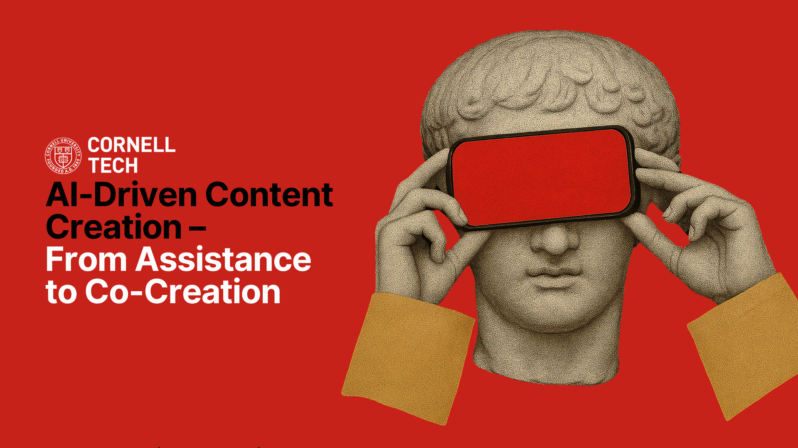
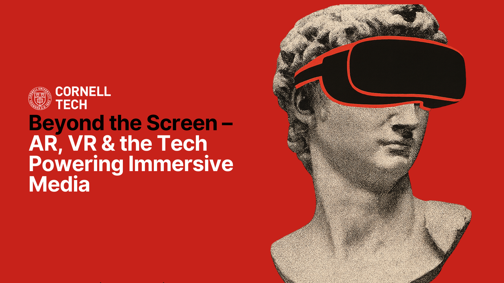
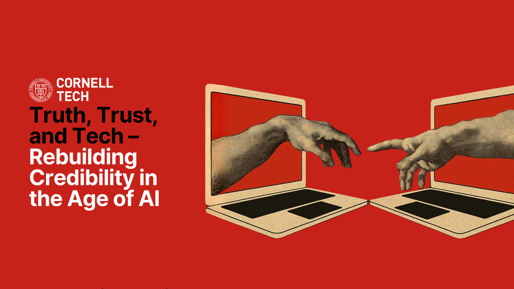
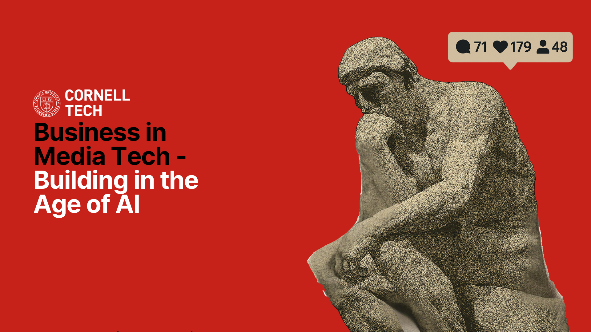

MediaTech Summit 2025 Leadership & Event Organization
A Resounding Success: The Inaugural MediaTech Summit
The first annual Cornell Tech MediaTech Summit, held in April 2025, was a landmark event, bringing together over 200+ students, faculty, industry leaders, and tech enthusiasts. The summit fostered vibrant discussions and networking, exploring the cutting-edge intersection of media, technology, and innovation. We are thrilled with the engagement and insights shared, setting a strong foundation for future MediaTech endeavors at Cornell Tech.
Event Highlights in Pictures
My Role & Contributions
As a student lead for the MediaTech Summit, my responsibilities spanned several key areas, contributing to the event's overall success:
- Strategic Planning & Vision: Collaborated with faculty and student teams to define the summit's theme, objectives, and overall program structure.
- Speaker Curation & Coordination: Identified and invited prominent industry leaders and academic experts to participate as speakers and panelists. Managed communications and logistics for guest speakers.
- Panel Moderation & Content Development: Led the planning for several panel discussions, including defining topics, crafting questions, and in some cases, moderating sessions to ensure engaging and insightful conversations.
- Marketing & Outreach: Contributed to the promotional strategy to attract a diverse audience from both within Cornell Tech and the broader NYC tech community.
- Logistics & On-site Management: Assisted with on-the-day event operations, ensuring a smooth experience for attendees and participants.
This leadership role was instrumental in shaping an event that was both intellectually stimulating and exceptionally well-received by all who attended.
Impact and Outcomes
The MediaTech Summit 2025 achieved several key objectives:
- Knowledge Sharing: Facilitated deep dives into critical topics such as AI-driven content creation, the immersive future of AR/VR, challenges of trust and truth in digital media, and innovative business models in the MediaTech space.
- Networking & Collaboration: Provided invaluable networking opportunities, connecting students with industry professionals and fostering potential collaborations.
- Showcasing Innovation: Offered a platform for Cornell Tech students and faculty to showcase their research and projects, highlighting the cutting-edge work being done at the institution.
- Community Building: Strengthened the MediaTech community at Cornell Tech and established the summit as a key annual event.
Attendees left with a deeper understanding of the transformative power of technology in media and a stronger network within the burgeoning MediaTech community.
Featured Panel Discussions
The summit featured a series of compelling panel discussions that delved into the most pressing issues and exciting opportunities in media technology. These sessions brought together diverse perspectives from academia and industry, sparking lively debate and offering deep insights.
Panel 1: AI-Driven Content Creation: The New Frontier
Morning Session
AI
Content
Creativity
Panel 2: Beyond the Screen – The Immersive Worlds of AR & VR
Morning Session
AR
VR
Immersive Tech
Spatial Computing
Panel 3: Truth, Trust, and Tech: Navigating the Information Age
Afternoon Session
Misinformation
Digital Trust
Ethics
Media Literacy
Panel 4: The Business of MediaTech: Monetization, Models, and Market Trends
Afternoon Session
Business Models
Monetization
Startups
Investment
Looking Forward
The success of the 2025 MediaTech Summit has laid a strong foundation for future events. We aim to continue fostering this vital dialogue and building on the connections made, further establishing Cornell Tech as a hub for MediaTech innovation.
For more information about MediaTech initiatives at Cornell Tech or to get involved in future events, please reach out. You can also connect with me on LinkedIn or visit the MediaTech Summit LinkedIn page.